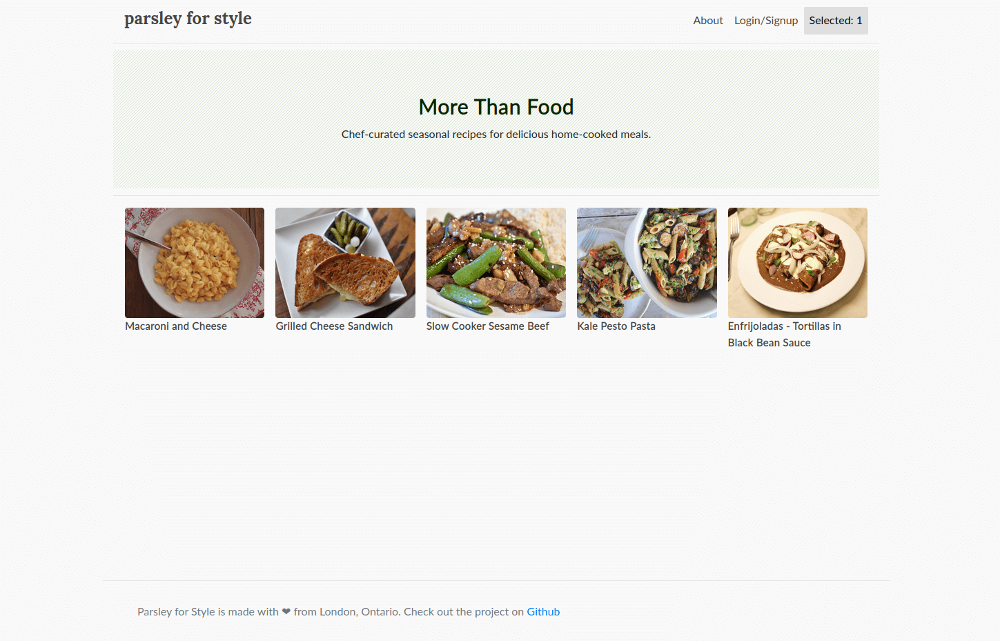
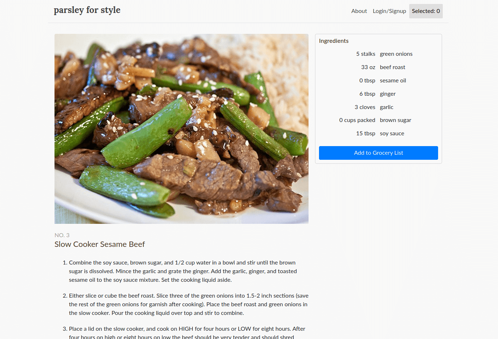

Parsley for Style
Parsley for Style is an app in development to reduce the amount of time it takes to prepare food. Promoting healthy eating by reducing barriers to starting cooking.
This was my first Django app, using a web framework built on top of Python. Although not the prettiest interface I've ever designed, it had the ability to sign up users and keep a list of user choices
The site was hosted on AWS and used elastic beanstalk service - with EC2 servers, load balancing and S3 for static data. The database, also hosted on AWS as an RDS instance runs a Postgres database and allows flexibility to develop the app further.